The “Baking Soda Water Shot” Everyone’s Talking About Is Real. But They’re Doing It Wrong. I Should Know. I’m the One Who Created It.
Baking soda alone does one job of three. The two jobs it leaves out are the reason your body keeps storing food it should be burning. Two weeks of my sister’s food records proved her weight was never about willpower. All three jobs are written out below, and so is the measured recipe that finally worked for her.
They Showed You One Third of My Recipe. The Missing Two Thirds Are Why Your Body Still Stores Every Meal.
You have seen the videos. The glass, the spoon, the famous faces swearing by it.
Maybe you even tried it. Measured it, stirred it, drank it before coffee, morning after morning—and felt nothing. Nothing on the scale. Nothing in your head, where the chatter about food never stops.
That is not because the shot is a scam. It is because you were handed one third of it.
Baking soda does one job—and your body needs three done before the food you eat gets burned instead of stored.
Do the one job and skip the other two, and your body keeps storing every meal. Every salad. Every skipped dessert.
Do all three jobs, and it works so fast that the first thing I tell most women is to slow down.
I know, because I spent almost a year getting the three jobs to work together in one scoop.
It began with my little sister Rachel, two weeks of food records, and a discovery that made me ashamed of every piece of advice I had ever given her.
I Was the Skinny Sister. I Told Her to Eat Less and Try Harder. I Was Dead Wrong.

My name is Dana. I was the skinny sister.
I’m a formulator and researcher. But for most of my life, I was simply the “lucky” one.
I could eat dessert, barely think about exercise, and stay thin.
Rachel could skip breakfast, pick at a salad, walk farther than I did—and watch the scale climb.
I mistook the way my body handled food for a virtue.
So when she struggled to lose the weight after her children, I told her what everyone else told her:
Eat less. Move more. Try harder.
I judged my own sister.
Then one day she looked at me with tears in her eyes and said:
“Dana, I AM. I swear to God, I am.”
That was when I stopped giving her advice and started collecting evidence.
So I Measured Every Bite She Ate for Two Weeks. What I Found Stopped Me Cold.
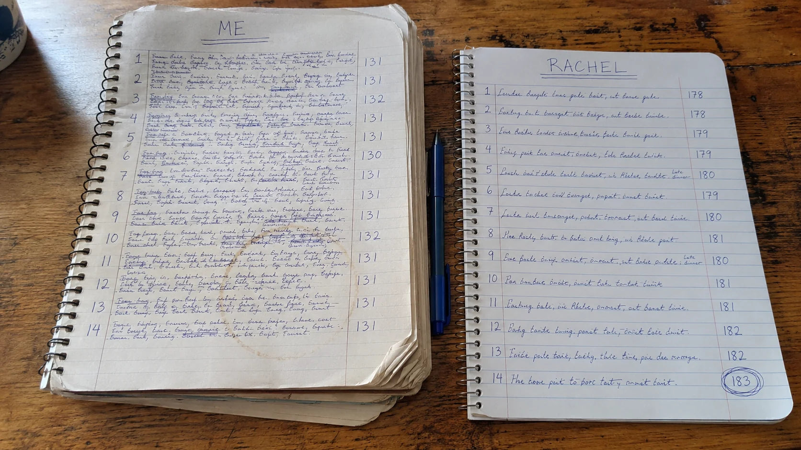
Rachel had three children, a job, a husband—and a body she no longer recognized.
Her youngest was three, and she still looked, in her words, “five months pregnant.”
She got dressed in the closet so her husband would not see her.
She had stopped appearing in photographs with her own children.
For two weeks, I measured and logged everything both of us ate.
Not estimates. Not what we remembered at the end of the day.
Everything that passed our lips went on the page. I tracked how far we walked. I wanted facts hard enough to end the argument.
Then I put our two columns side by side.
My little sister was eating less than me. She was moving more than me. And she was gaining weight while I stayed thin doing half of what she did.
That was the moment I understood what I had done to her.
Rachel was not lazy. She was not lying. She was not weak.
Something inside her body was doing the opposite of mine with the same food.
No diet could solve a problem nobody had correctly named.
Because the calories were already right.
The destination was wrong.
At 1 A.M. I Found the Study That Explained What Was Happening to My Sister.
I spent months digging through the research.
Then one night, with her children asleep and my coffee cold, I found a 2024 paper in Obesity about the gut cells that release one specific hormone.
The signal that tells your body what to do with the food you eat.
Use it for energy—or store it as fat.
The researchers found that when the environment surrounding those cells became too acidic, the signal fell.
When they raised the surrounding pH, release of the signal roughly doubled.
Acidic gut. Quiet cells. No signal.
That was Rachel. That was every woman I knew who ate like a bird and could not lose a pound.
Not because they lacked discipline. Not because they forgot how much they ate.
Their bodies were being handed a different instruction.
Here is what that instruction says.
It’s Not That You Eat Too Much. Your Body Is Storing Food It Should Be Burning.
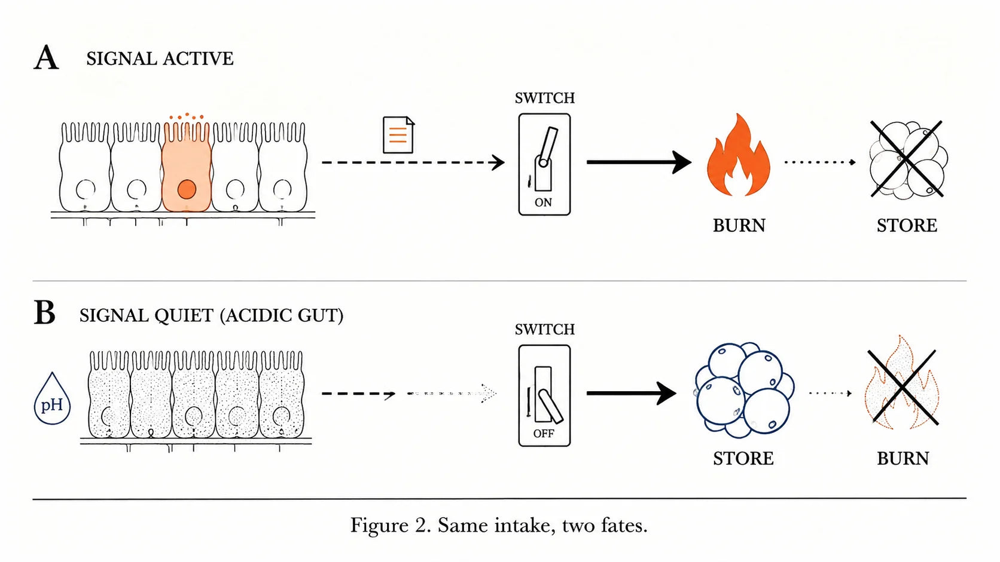
Here is what is happening inside you, every single time you eat.
A bite goes down. Inside your gut, a row of cells is supposed to write a note: use this—burn it.
When those cells are awake, the note goes out, the switch at the end of the hall reads it, and your breakfast gets burned for energy.
That is the “lucky” metabolism your thin friend has. She does not eat less than you. Her note gets delivered.
Now watch what happens in a gut that has turned acidic.
The cells go quiet. The note never gets written. With no note, your body falls back on its oldest setting—the one it uses when it believes food is running out.
STORE.
A salad. A grilled chicken breast. An apple. Filed away as fat, one after the other, all day long.
And a body set to STORE does not just keep the food. It keeps asking for more.
That is the noise—the blender in your head that never switches off. It is not greed. It is a body that never got the note saying enough, we are burning now.
Then I found the second problem.
Even when a few cells do wake up and write the note, there is a thief in the hallway.
An enzyme called DPP-4 tears the note up in under two minutes, before it reaches the switch.
So waking the cells is not enough. The note has to get past the thief. And the switch at the end of the hall has to answer it.
Something has to wake the signal. Something has to protect it. Something has to flip the switch.
Three jobs. Miss one and the food still goes to STORE—and the noise never gets the message to stop.
Now look at everything Rachel had already tried—and who got paid each time.
Diet. Exercise. Injections. The Viral Shot. Every One Misses a Job.
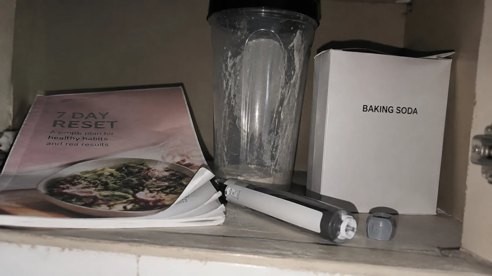
Eating less cannot wake a quiet cell. Rachel was already eating less than me. Her body filed it away anyway.
Exercise cannot stop the thief in the hallway. Rachel walked a lot more than me and gained anyway. You cannot out-walk a body that stores everything.
The injections do something different. Ozempic, Wegovy, Mounjaro, Zepbound. They hand your body a copy of the note—for as long as you keep paying for the copy. $1,000 or more a month.
In the big Wegovy trial, researchers kept following people for a year after they stopped the shots. About two-thirds of the weight came back.
Replacement isn’t a cure. It’s a rental.
And the baking soda glass does Job One and stops there, because one ingredient can only perform one job.
Four ways. Four misses. Every one of them left Rachel exactly where she started.
Who Gets Paid When You Only Have One Job of Three
Here is the part nobody says out loud. The rental business does not want you to own anything.
A woman who writes her own note is a customer who stops paying. That is the whole business model. Nobody who sells the injection pens gets a bonus when you cancel.
So why did nobody ever hand you all three jobs on one page?
Because there is no money in it. Nobody runs television ads for a box of baking soda. Nobody collects $1,000 a month from a woman whose own gut does the work.
You were never lied to about the trick. You were sold the third of it that keeps you coming back.
“So the baking soda shot IS a scam.”
No. The glass is a third. Look at what you already know.
One: my sister’s ledger. She ate less than me, moved more than me, and gained. The food was never the variable.
Two: the 2024 paper. Those cells go quiet in acid, and baking soda takes the acid off. Job One is real.
Three: the injection pen. It works exactly as long as you pay, and the day you stop, the weight comes back. A note somebody else writes for you is not yours.
So the baking soda glass was never a scam. It is one third of an experiment. The other two thirds are below.
Which left one road nobody on those videos had walked: build one recipe that does all three jobs at once.
Something has to wake the signal. Something has to protect it. Something has to flip the switch.
If one job fails, the recipe fails with it.
Three Jobs, One Scoop. I Call It the Three-Job Recipe.
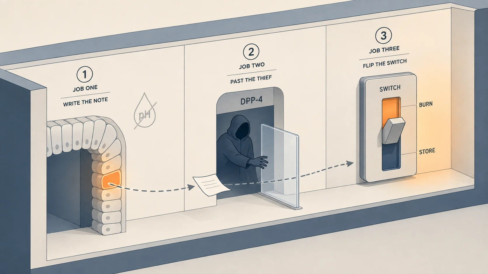
I call it the Three-Job Recipe because the baking soda shot was never a recipe. It was one job.
Think of it as one note that has to make it down a hallway.
Job One—write the note. Baking soda takes the acid off the quiet cells so they send the signal. The one real job the videos got right.
Job Two—get it past the thief. Something strong enough to hold DPP-4 off until the note reaches the switch. The same strength every single morning.
Job Three—flip the switch. Something that reaches the switch in a form the body can use, and pushes it from STORE back to BURN.
Here is the proof each job is real, one number at a time:
1. In the 2024 study, moving the acid level around those cells from 6.3 to 7.6 roughly doubled the signal they sent out. Job One is not a trick. It is chemistry.
2. DPP-4 takes the signal apart in under two minutes. A woken signal with nobody guarding it is a signal that never arrives. That is Job Two.
3. In that same Wegovy trial, people lost 17.3% of their body weight on the shots and got 11.6 points of it back within a year of stopping. A switch flipped by a rental flips back the day the rent stops. Job Three has to be yours.
So before I mixed anything, I wrote down what a real recipe had to do:
- Do all three jobs in one glass, at the same time—not three things you take one after another.
- Be strong enough for Job Two to matter. A pinch is not a dose.
- Reach the switch for Job Three. The cheap form washes through you.
- Come out the same strength every morning, in three seconds at the sink. A batch that changes is not a recipe, and a woman who has done everything right is not going to run a laboratory before breakfast.
Knowing the three jobs, I did the obvious thing. I found one thing for each job and started mixing them in my kitchen.
It was a disaster.
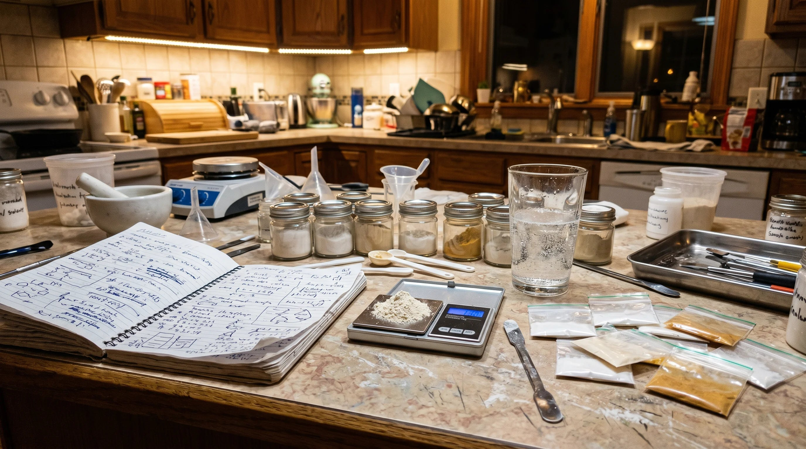
Baking soda is a knife-edge. A little too little and Job One never happens. A little too much and your stomach tells you before breakfast is over. “A spoonful” is not a dose.
For Job Two, the first thing I bought was far too weak to hold the thief off, and nothing on the packaging told me so. For Job Three, the first thing I bought passed straight through me before enough of it reached the switch. Right ingredient. Wrong strength, wrong form.
And all three have to be balanced. Too much of one buries another.
Knowing the three jobs was the easy part. Strength, dose, form, balance, and getting it the same every time were the recipe.
So I turned my kitchen into a lab.
For almost a year I weighed powders, tested batches on myself, changed one thing at a time, and threw out far more than I kept.
Only when the same measured scoop came out the same three mornings running did I stop changing it.
And here is the part nobody selling the viral version can tell you, because their version never gets this far: the food noise goes quiet first.
The first thing you notice is not a number. It is a Tuesday afternoon when it hits you that you have not thought about food since breakfast. Then the scale starts moving—and it keeps moving, because nothing is being rented.
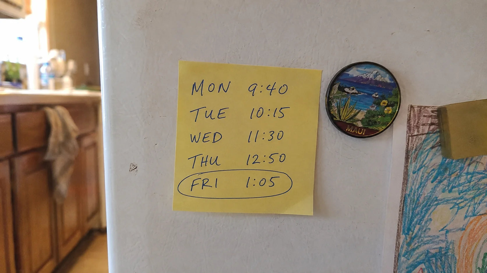
That was the batch I handed my sister.
I Watched My Sister Come Back to Life. This Is Her, Before and After.

I gave Rachel that exact mix.
One measured scoop in water every morning.
She called me a week later.
Not crying this time.
“Dana… the noise is gone.”
That constant chatter about food—what can I eat, what can’t I, how much—had gone quiet.
Then the scale started moving.
She was not eating less. Her body had finally started using what she ate instead of holding onto it.
She lost the first several pounds so fast I told her to ease off and use it five days a week instead of seven.
I need you to hear that clearly. More is not better. If your results begin moving faster than you are comfortable with, use it five days a week.
Four months later, Rachel had lost 41 pounds.
No diet. No gym. One measured scoop on the schedule I gave her.
But the number on the scale is not the part that makes me cry.
It is this.
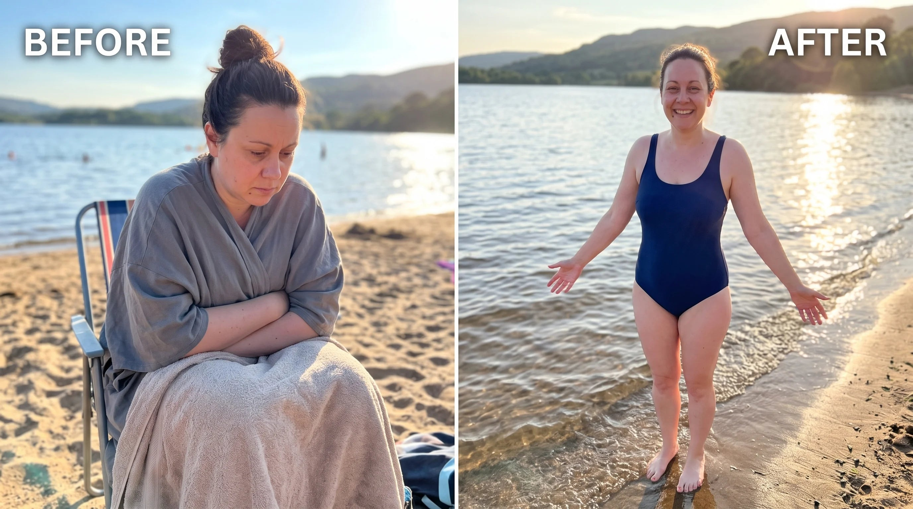
For three years she got dressed in the closet so her husband would not see her.
She stopped letting anyone photograph her.
Now look at her.
She went to the lake and did not reach for a cover-up.
She is in every single photo with her children now.
That is the part I would pay any amount of money for.
And it cost her almost nothing.
Word spread the way it always does between women who have suffered the same thing.
Rachel’s friends asked. Then their friends.
I Could Hand-Mix It for Rachel. I Couldn't Hand-Mix It for Every Woman Who Asked.
I took the recipe I'd spent a year balancing to an FDA-registered lab. Every scoop had to match what I'd made for Rachel.
Sodium bicarbonate to wake the signal. Concentrated, standardized gingerol to protect it. Bioactive berberine to flip the switch.
This Is SlimSoda. My Complete Recipe. Not the Capsule That Got It Wrong.
What the lab added is the part my kitchen could not: the strength, the dose, and the ratio locked in, so tomorrow’s scoop is identical to today’s.
It is made in small batches, and I check every one. The scoop you get has to match the scoop I made for Rachel.
I kept it in its original powder form. All three jobs, together in one measured scoop.
One scoop in a glass of water each morning. Three seconds. All three jobs.
This is the recipe I made for Rachel. And I priced it for women like my sister, not for a celebrity's markup.
Real Women. Real Before-and-Afters. No Diet, No Gym, No Needle.
Rachel was the beginning. These three women took the same complete recipe. Read what changed.
“I’m 63. I’ve been dieting since Nixon was president. I was the biggest skeptic alive. Down 22 pounds and I have not changed one thing about how I eat. The weight just started coming off on its own.”
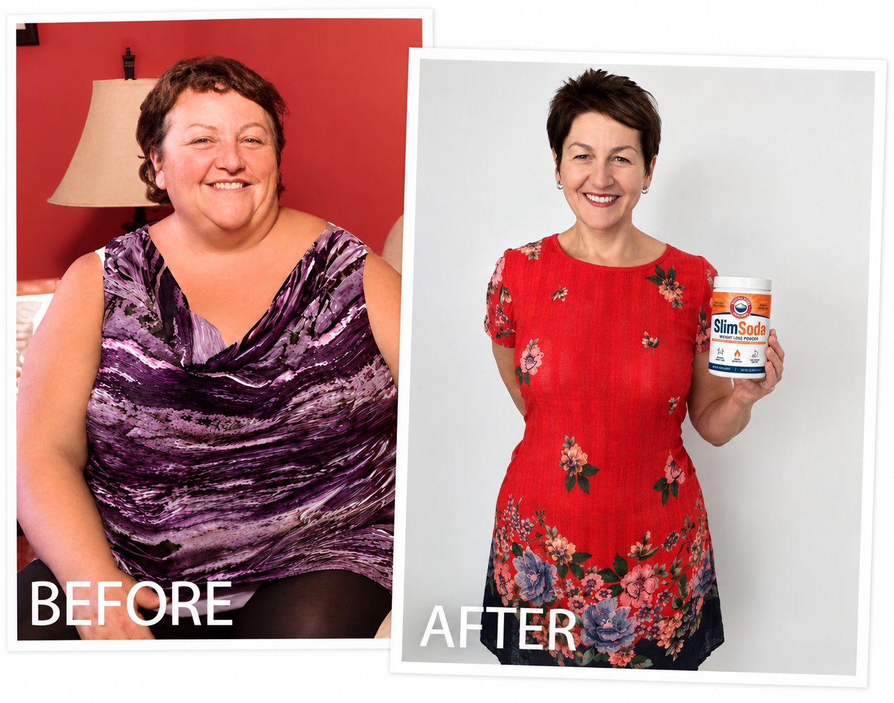
“Four grandkids. Four years of ‘I’ll get to it.’ I refused to donate my old jeans because donating felt like giving up. Last week they buttoned. I sat on the floor and cried.”
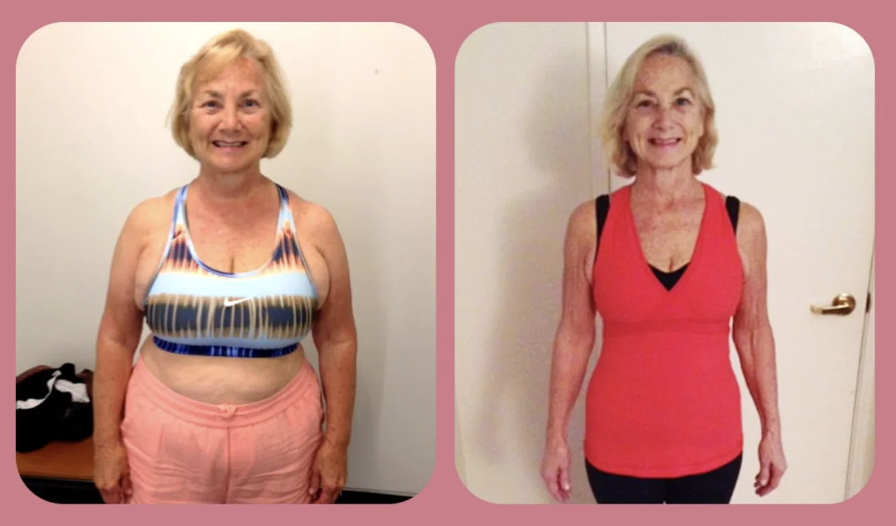
“I lost weight on the shots and gained it all back plus more the second I stopped, and I couldn’t afford $1,100 a month on a fixed income anyway. This is the first thing that worked AND stayed. No nausea, no needle, no rebound. At 71 I did not think this was still possible.”
The same advantage, all three: none of them spent a year in a kitchen finding the recipe. They used it.
One warning, and I mean it. Some women lose weight faster on this than they expect. If that is you, drop to five mornings a week instead of seven. This is not a race. Respect how well it works.
The Celebrity Capsule Is $100. The Injections Are $1,000 a Month. Today You Get SIX Tubs of the Complete Recipe for $19.99 a Tub.
Now put the numbers side by side, because this is where the incomplete version has been robbing you.
The injections that only rent you weight loss: $1,000 or more every month, forever—and it all comes back the day you stop.
The copycat capsule I saw on television this year, built on one third of my own recipe: $100 for two bottles of one job.
Everything you already spent on shakes, programs, gummies and gadgets that did nothing: for most women, thousands of dollars—and a fresh round of blaming yourself every time.
SlimSoda was going to be $59.99 for one tub. That is the real price of a three-job recipe made in a real lab.
But I did not make this for a markup. I made it for Rachel, and for you. So while they are on television selling one third of it, I am doing the one thing they cannot afford to do.
$19.99 a tub does not get you one tub. It gets you six. You pay for three tubs and I cover the cost of the other three—less than the capsule charges for one bottle of the watered-down version. It cuts my margin. I can live with that a lot easier than one more woman buying a capsule that was never going to work and blaming herself for it.
Six tubs. A full 6-month supply of all three jobs—for the price of just 3 tubs, all paid upfront—and even longer if you drop to five mornings a week because it is moving fast.
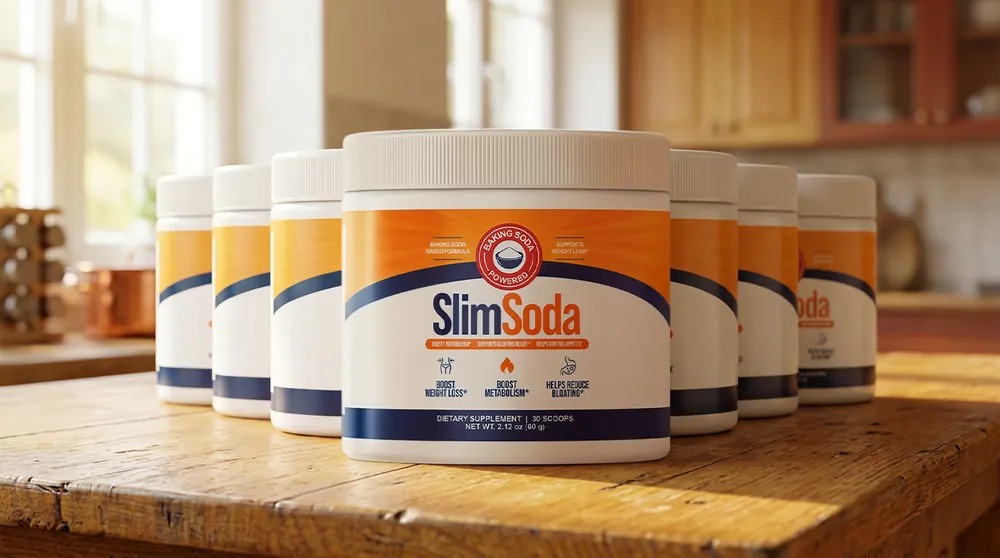
Today’s Offer
Buy 3 Tubs, Get 3 Tubs FREE
$359.94 Just $59.99 — only $19.99 per tub
The batches are small because I check them. When this one is gone, the three free tubs go with it.
“Fine. Now I know the three. I’ll buy them and mix it myself.”
That was my first move too, and I had the names. It was a disaster, and here is why the names were never the hard part.
One: if you ever bought berberine on its own and felt nothing, this is why. Standard berberine capsules absorb at under 1%—most of the bottle never reached your switch.
Two: when ConsumerLab tested 13 berberine brands, 7 had little or no berberine in them at all.
Three: the ginger in your spice rack carries almost none of the gingerol Job Two needs.
You can buy the right three names and still build the wrong recipe. The tub is the right three, in the right forms, already measured.
Use Both Tubs. If the Food Noise Doesn’t Quiet and the Scale Doesn’t Move, Every Penny Comes Back.
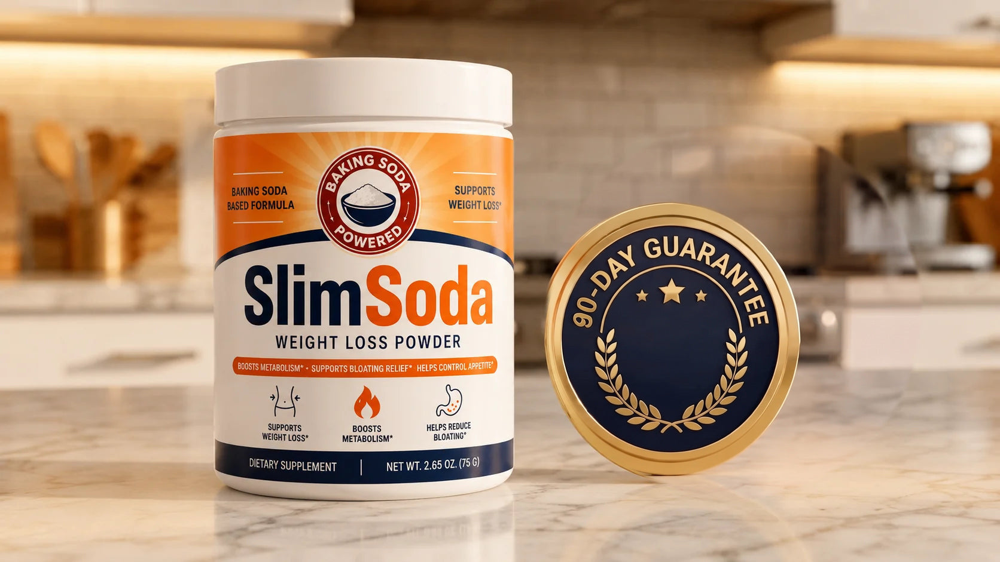
I am the woman who told her own sister to eat less.
I am not going to keep a dollar from a woman it did not work for. That is the whole reason for this guarantee, and it is not a marketing reason.
So here is the deal, and it has no fine print.
Take one measured scoop every morning for 6 months. Five mornings a week if it moves fast for you. Use all six tubs. Empty them.
If the food noise does not quiet and the scale does not move, email Jenny on my team and she refunds every penny.
Nobody argues with you. Nobody calls to talk you out of it.
“Nobody refunds an empty tub. What’s the catch?”
There is no catch, and here is why I can afford it.
The women it works for keep it, and they tell their sisters. The women it does not work for were never going to be my customers—and I would rather refund them than have them tell their sisters I kept their money.
Ninety days is long enough to know. I would be a coward to give you less.
90-Day Empty-Tub Promise
Use all six tubs. If within 90 days the scale does not move or the food noise does not quiet, email us and receive every penny back—even if the tubs are empty.
SlimSoda gets 90 days to do all three jobs. Otherwise every penny of your $59.99 comes back to you.
“Still Here? The Five Things Women Ask Me Before They Order.”
“What exactly is in it, and what do I do with it?”
One tub. One scoop. Sodium bicarbonate, concentrated standardized gingerol, bioactive berberine—the three jobs, already measured. One scoop in a glass of water each morning on an empty stomach. Do not increase the scoop.
“What will I notice, and when?”
The quiet first. Rachel called me a week in—not about the scale, about the food noise. The scale came after. If it moves faster than you are comfortable with, switch to five mornings a week.
“How long are the three free tubs available?”
Until this batch is gone. The batches are small on purpose. I do not print a date I cannot keep.
“Say the guarantee again.”
Ninety days. All six tubs, even empty. Email, refund, done.
“How do I start?”
Tap the button. One package, six tubs. Enter your details on the secure page and it ships to your door. Tomorrow morning: one scoop, one glass, then get on with your day.
This Is for You If You Did Everything Right. It Is Not for You If…
It is for you if you measured, you logged, you walked, you were told “eat less” by someone half your age—and if you tried the baking soda shot, you did it exactly like the video and felt nothing. You did a third of a recipe perfectly. The other two thirds are in the tub.
It is not for you if you are fine renting your weight loss for $1,000 a month, forever. Go rent it. This restarts your own signal—and a signal you own does not walk out the door the day the rent stops.
It is not for you if you are going to take it nine mornings and quit. The guarantee says 90 days because 90 days is what it takes to know.
And it is not for you if you are looking for one more thing to try. This is not one more thing. It is the reason the last thing did not work.
Six Months From Now, You’ll Either Be Back in the Photo—or Still Hiding Behind the Camera.
Rachel cannot get back the three years she spent getting dressed behind a closed closet door.
But she stopped giving away another one.
The months ahead will pass either way.
You can walk away from this and carry the same food noise and the same stuck scale into another summer—one more family trip where everyone remembers you were there and nobody can find you in the pictures.
Or you can give the Three-Job Recipe 90 days.
Nineteen days from now, picture this. You are standing at the kitchen counter at four in the afternoon and you realize you have not thought about food since breakfast. You stop, because it is strange. Then you get on with your day.
A few weeks after that, somebody raises a camera—and you stay where you are.
That is not vanity. That is getting your place in your own life back.
You have spent years giving pieces of yourself to everyone else.
It is time to stop disappearing.
SlimSoda gives you the recipe Rachel used, already measured into one morning scoop.
Today $19.99 a tub puts all six tubs on your doorstep, and every penny is protected for 90 days.
The next family photograph can include you.
P.S. One more thing, for the woman whose husband rolls his eyes when another box arrives. This box is the last one, or it is free. All six tubs, 90 days, every penny back if the food noise does not quiet and the scale does not move—and nobody argues with you about it. Six tubs, $19.99 a tub, protected for 90 days: order here.